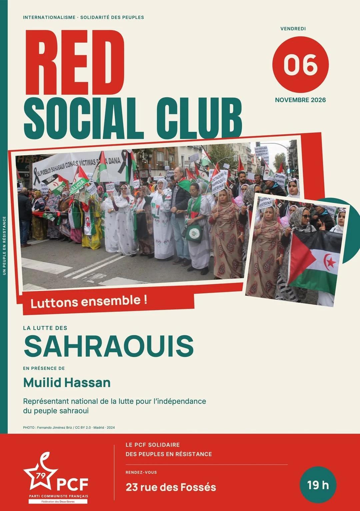

Publication du PCF 79
Red Social Club. Notre invitation autour de la lutte du peuple sahraoui
Date indiquée par Facebook · 1 novembre 2026
Légende originale du PCF 79
Red Social Club
Vendredi 6 novembre à 19 h
23 rue des Fossés à Niort : la lutte des Sahraouis, en présence de Muilid Hassan, représentant national de la lutte pour l’indépendance du peuple sahraoui.
Le PCF solidaire des peuples en résistance.
Repères éditoriaux
Pour le vendredi 6 novembre, nous avions invité Muilid Hassan, représentant national de la lutte pour l’indépendance du peuple sahraoui. Notre annonce donnait rendez-vous à 19 h, au 23 rue des Fossés à Niort. Nous y affirmions notre solidarité avec les peuples en résistance.

Sources
PCF 79 · relevé Meta et fil Facebook · FB-1455818160064766
À lire aussi · Journée internationale de la paix. Le texte national dans le relevé